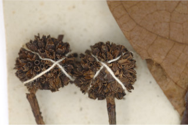
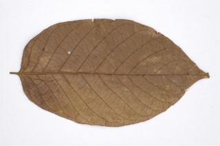
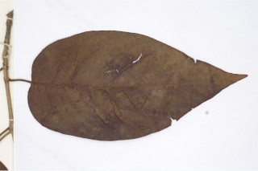
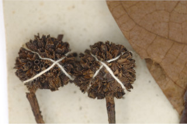
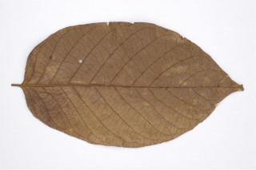
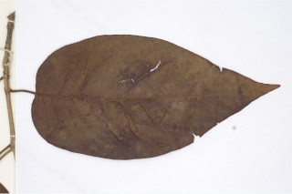

Deciduous trees up to 15 m tall.
15 ಮೀ. ಎತ್ತರದವರೆಗಿನ ಎಲೆಉದುರು ಮಾದರಿಯ ಮರಗಳು.
Deciduous trees up to 15 m tall.
இலையுதிர் மரம் 15 மீ. உயரம் வரை வளரக்கூடியது.
Bark grey, smooth; blaze cream.
ತೊಗಟೆ ಬೂದು ಬಣ್ಣದಲ್ಲಿದ್ದು ನಯವಾಗಿರುತ್ತದೆ;ಕಚ್ಚು ಮಾಡಿದ ಜಾಗ ಕೆನೆ ಬಣ್ಣದಲ್ಲಿರುತ್ತದೆ.
Bark grey, smooth; blaze cream.
மரத்தின் பட்டை சாம்பல் நிறமானது, வழுவழுப்பானது; உள்பட்டை கீரிம் நிறமானது.
Branches horizontal; young branchlets quadrangular, glabrous.
ಕಿರುಕೊಂಬೆಗಳು ಕಾಂಡದ ಲಂಬ ರೇಖೆಗೆ ಸಮಕೋನದಲ್ಲಿರುತ್ತವೆ;ಕಿರುಕೊಂಬೆಗಳು ಚತುಷ್ಕೋನದ ಆಕಾರದಲ್ಲಿದ್ದು ರೋಮರಹಿತವಾಗಿರುತ್ತವೆ
Branches horizontal; young branchlets quadrangular, glabrous.
கிளைகள் நிலத்திற்கு இணையானவை; சிறிய நுனிக்கிளைகள் குறுக்குவெட்டுத் தோற்றத்தில் நான்கு கோணங்களுடையது, உரோமங்களற்றது.
Leaves simple, opposite, decussate; stipules large, obovate with keeled back, interpetiolar, caducous and leaving scar; petioles 1-3 cm long, planoconvex in cross section, glabrous; lamina 10-20 x 4.5-10 cm, ovate, elliptic-ovate, apex acuminate, rarely acute, base truncate to obtuse, margin entire, coriaceous, glabrous beneath; midrib flat above; secondary_nerves up to 12 pairs; tertiary_nerves distantly obliquely percurrent.
ಎಲೆಗಳು ಸರಳವಾಗಿದ್ದು ಕತ್ತರಿಯಾಕಾರದ ಅಭಿಮುಖ ಜೋಡನಾ ವ್ಯವಸ್ಥೆಯಲ್ಲಿರುತ್ತವೆ; ಕಾವಿನೆಲೆಗಳು ದೊಡ್ಡ ಗಾತ್ರದಲ್ಲಿದ್ದು,ಅಂಡಾಕಾರ ಹೊಂದಿದ್ದು ಹಡಗಿನಾಕಾರದ ಹಿಂಬದಿಯನ್ನು ಹೊಂದಿರುತ್ತವೆ ಹಾಗೂ ತೊಟ್ಟುಗಳ ನಡುವೆ ಇರುತ್ತವೆ ಮತ್ತು ಉದರಿದಾಗ ಗುರುತನ್ನು ಉಳಿಸುತ್ತವೆ;ತೊಟ್ಟು 1 ರಿಂದ 3 ಸೆಂ.ಮೀ.ವರೆಗಿನ ಉದ್ದವಿದ್ದು, ಅಡ್ಡ ಸೀಳಿದಾಗ ಸಪಾಟ ಪೀನ ಮಧ್ಯದ ಆಕಾರ ಹೊಂದಿದ್ದು ರೋಮರಹಿತವಾಗಿರುತ್ತವೆ;ಪತ್ರಗಳು 10 -20 X 4.5 – 10 ಸೆಂ.ಮೀ. ಗಾತ್ರ ಹೊಂದಿದ್ದು ಅಂಡ,ಅಂಡವೃತ್ತ -ಅಂಡದವರೆಗಿನ ಆಕಾರ ಹೊಂದಿದ್ದು,ಕ್ರಮೇಣ ಚೂಪಾಗುವ, ಅಪರೂಪವಾಗಿ ಚೂಪಾದ ಮಾದರಿಯ ತುದಿ,ಛಿನ್ನಾಗ್ರ ಅಥವಾ ಚೂಪಲ್ಲದ ಮಾದರಿವರೆಗಿನ ಬುಡ, ನಯವಾದ ಅಂಚು,ತೊಗಲನ್ನೋಲುವ ಮೇಲ್ಮೈ ಹೊಂದಿದ್ದು ತಳಭಾಗದಲ್ಲಿ ರೋಮರಹಿತವಾಗಿರುತ್ತವೆ;ಮಧ್ಯನಾಳ ಪತ್ರದ ಮೇಲ್ಭಾಗದಲ್ಲಿ ಚಪ್ಪಟೆಯಾಗಿರುತ್ತದೆ;ಎರಡನೇ ದರ್ಜೆಯ ನಾಳಗಳು 12 ಜೋಡಿಗಳವರೆಗಿನ ಸಂಖ್ಯೆಯಲ್ಲಿರುತ್ತವೆ; ಮೂರನೇ ದರ್ಜೆಯ ನಾಳಗಳು ಹೆಚ್ಚಿನ ಅಂತರ ಹೊಂದಿದ್ದು ಓರೆಯಾಗಿ ಎಲೆಯ ದಿಂಡಿಗೆ ಅಡ್ಡವಾಗಿ ಕೂಡುತ್ತವೆ.
Leaves simple, opposite, decussate; stipules large, obovate with keeled back, interpetiolar, caducous and leaving scar; petioles 1-3 cm long, planoconvex in cross section, glabrous; lamina 10-20 x 4.5-10 cm, ovate, elliptic-ovate, apex acuminate, rarely acute, base truncate to obtuse, margin entire, coriaceous, glabrous beneath; midrib flat above; secondary_nerves up to 12 pairs; tertiary_nerves distantly obliquely percurrent.
இலைகள் தனித்தவை, எதிரடுக்கமானவை, குறுக்குமறுக்கானவை; இலையடிச்செதில் பெரியவை, தலைகீழ் முட்டை வடிவானது, தளம் படகு போன்றது, இலையடிச்செதில் இருஇலைக்காம்பிற்கு நடுவே (இண்டர்பீட்டியோலார்) உடையது, எளிதில் உதிரக்கூடியது மற்றும் தழும்புகளை ஏற்படுத்துகின்றன; இலைக்காம்பு 1-3 செ.மீ. நீளமானது, குறுக்குவெட்டுத் தோற்றத்தில் பிளேனோகான்வக்ஸ், உரோமங்களற்றது; இலை அலகு 10-20 x 4.5-10 செ.மீ., முட்டை வடிவானது, நீள்வட்டம்-முட்டை வடிவானது, அலகின் நுனி அதிக்கூரியது, அரிதாக கூரியது, அலகின் தளம் சதுர வடிவானது முதல் மெட்டையானது, அலகின் விளிம்பு முழுமையானது, கோரியேசியஸ், உரோமங்களற்றது; மையநரம்பு மேற்புறத்தில் அலகின் பரப்பிற்கு சமமானது; இரண்டாம் நிலை நரம்புகள் 12 ஜோடிகள்; மூன்றாம் நிலை நரம்புகள் தளம் நோக்கிய இணையான அகன்ற பெர்க்கரண்ட்..
Inflorescence terminal head; flowers sessile, yellow with purple tinge; calyx lobes elongated.
ಪುಷ್ಪಮಂಜರಿಗಳು ತುದಿಯಲ್ಲಿನ ಗೋಳಾಕಾರ ಮಂಜರಿ ಮಾದರಿಯವು;ಹೂಗಳು ತೊಟ್ಟುರಹಿತವಾಗಿದ್ದು ಕೆನ್ನೀಲಿ ಛಾಯೆಯುಳ್ಳ ಹಳದಿ ಬಣ್ಣದಲ್ಲಿರುತ್ತವೆ; ಪುಷ್ಪಪಾತ್ರೆಯ ಎಸಳುಗಳು ದೀರ್ಘೀಕರಣಗೊಂಡಿರುತ್ತವೆ.
Inflorescence terminal head; flowers sessile, yellow with purple tinge; calyx lobes elongated.
மஞ்சரி தண்டின் நுனியில் காணப்படும் சீரமஞ்சரி; மலர்கள் காம்பற்றது, மஞ்சள்-பர்புள் கலந்தவை; புல்லி இதழ்கள் நீண்டவை.
Capsules arranged in globose heads, each with 2-folicular cocci; seeds many, winged.
ಸಂಪುಟ ಫಲಗಳು ದುಂಡನೆಯ ಗೋಳಾಕಾರ ರೀತಿಯಲ್ಲಿ ಜೋಡನೆಯಾಗಿರುತ್ತವೆ, ಪ್ರತಿಯೊಂದು ಸಂಪುಟ ಫಲದಲ್ಲಿ 2 ಮರಿಸೋತ ಫಲಗಳಿರುತ್ತವೆ;ಬೀಜಗಳ ಸಂಖ್ಯೆ ಹಲವಾರು ಇದ್ದು ರೆಕ್ಕೆಗಳ ಸಮೇತವಿರುತ್ತವೆ.
Capsules arranged in globose heads, each with 2-folicular cocci; seeds many, winged.
வெடிகனி (கேப்சியூல்) கோள வடிவமான சீரமஞ்சரியில் அமைந்தவை, ஒர் கனி இரண்டு இலைப் போன்ற அமைப்பு கொண்ட உருண்ட வடிவுடையது (காக்கை); விதைகள் எண்ணற்றது, இறகுடையது.
 




